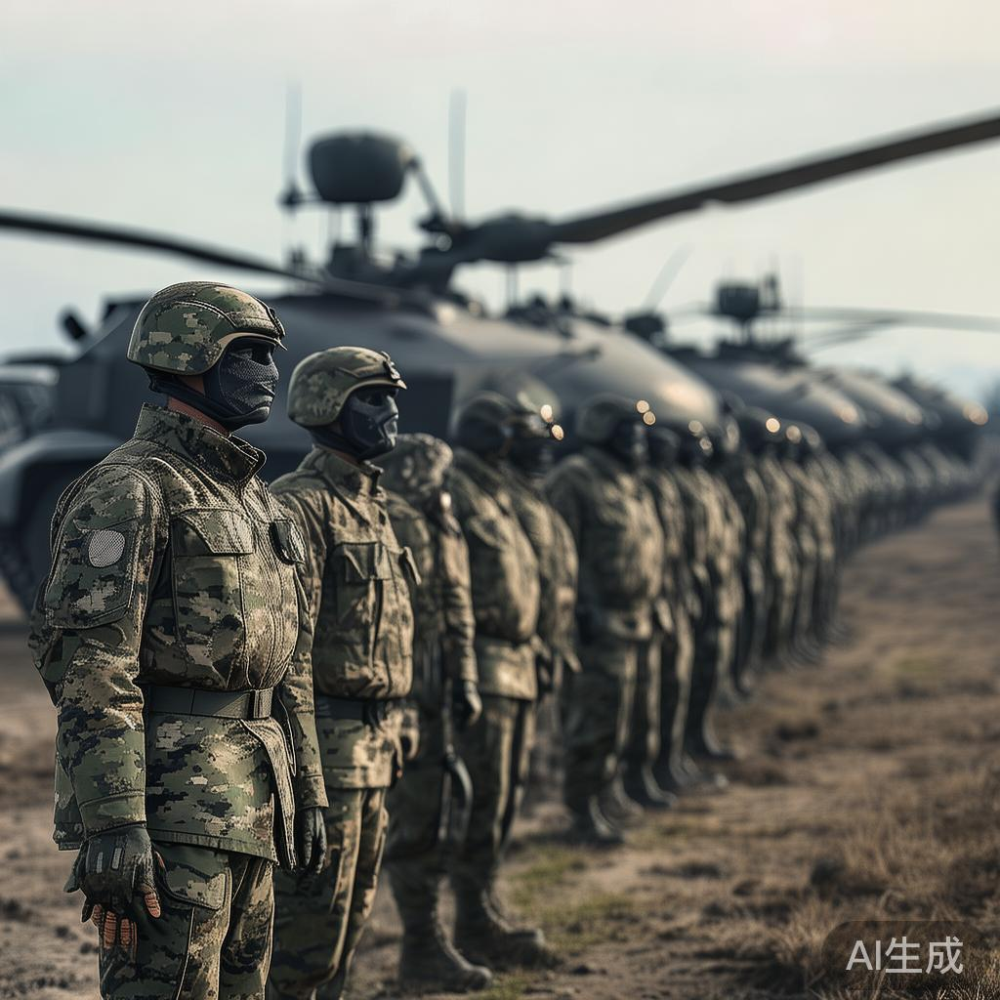
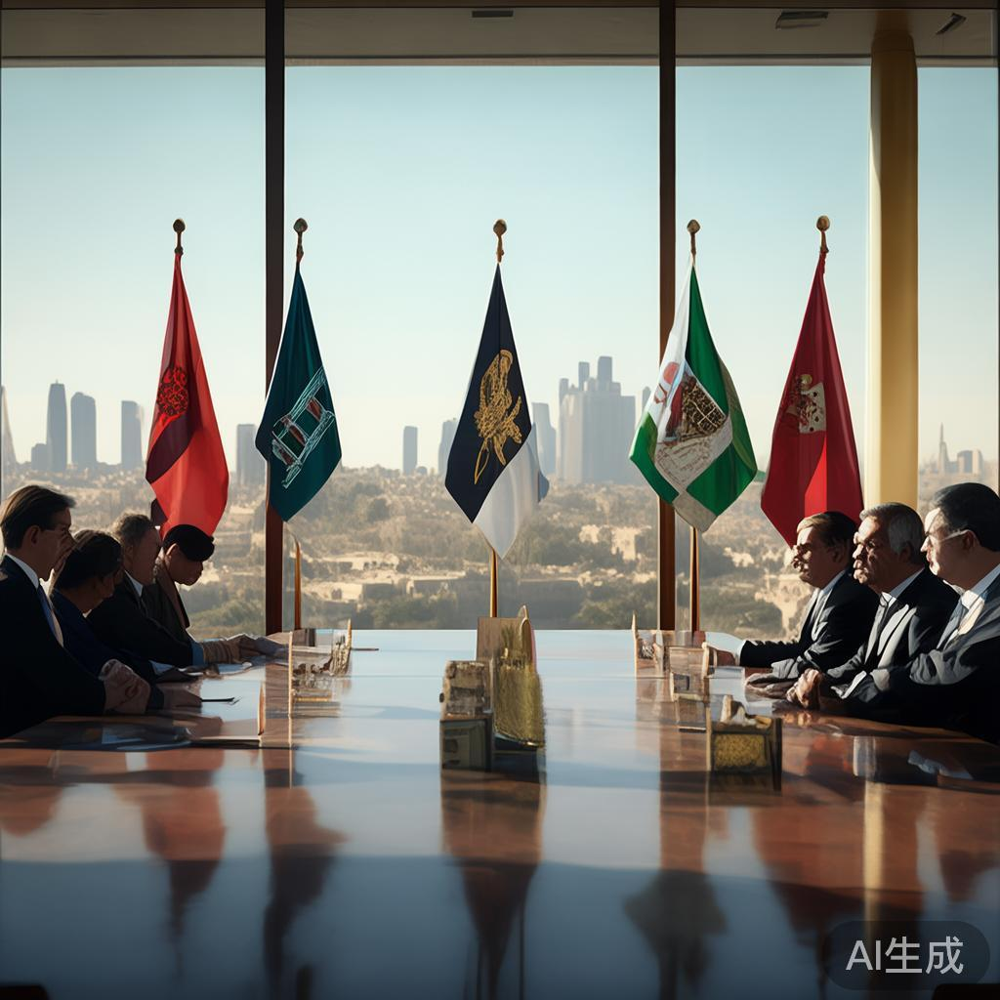

01
美国联邦航空局发布全国停飞指令 上万架次航班受影响
美国联邦航空局13日以“特殊情况和安全原因”发布全国范围地面停飞指令，截至美东时间17时40分已致超1100架次航班取消、近1万架次延误，所有航路交通管制中心均受通信问题影响。FBI初步排除网络攻击，调查重点之一指向软件更新；特朗普已听取简报。这是“9·11”以来第二次全美范围停飞。
国际
美国联邦航空局13日以“特殊情况和安全原因”发布全国范围地面停飞指令，截至美东时间17时40分已致超1100架次航班取消、近1万架次延误，所有航路交通管制中心均受通信问题影响。FBI初步排除网络攻击，调查重点之一指向软件更新；特朗普已听取简报。这是“9·11”以来第二次全美范围停飞。
微软周四发生大规模服务中断，波及全球政府机构、企业及交易员，部分交易团队被迫改用电话、传真处理指令，普氏22项生物燃料价格一度暂停发布。微软周五称服务恢复取得进展，但仍有20多项产品和服务可能出现错误；Anthropic同期确认影响M365连接器的错误已解决。
美联储周五在半年度金融稳定报告中指出，人工智能和高企的资产估值可能带来潜在脆弱性，“资产估值压力持续处于高位”，股票估值指标仍然偏高，部分受到市场对“超级智能”热情的推动；同时对企业资本支出和发债计划的担忧在一定程度上抑制了这种热情。
俄罗斯国防部13日通报称，俄军当天利用无人机打击了乌方的能源、港口和铁路基础设施，过去一周内还打击了乌方的军工企业、物流中心等目标。战场外围设施消耗战仍在持续，能源与交通动脉成为双方打击重点。

据新华社消息，由英国和法国牵头组建的“志愿联盟”于11月9日在波兰启动首次多国联合军事演习，旨在为俄乌冲突结束后在乌克兰部署部队做准备。澎湃防务专栏分析认为，欧洲此次“亮牌”难掩战略透支，兵力与装备缺口使驻乌计划前景存疑。

据埃及中东通讯社，埃及、土耳其和卡塔尔三国情报部门负责人近日在开罗举行三方会议，讨论加沙地带局势最新进展。三方同意继续落实停火协议第一阶段安排，遵守协议有关条款，并增加人道主义援助进入加沙。
据外媒报道，美国财政部正考虑提供短期过桥贷款，帮助委内瑞拉偿还拖欠美洲开发银行（IDB）的约23亿美元债务以恢复融资资格。IDB周五已批准重新与委内瑞拉接触，清偿欠款后未来两年或获该行最高60亿美元贷款，世界银行同期也可能提供最高50亿美元。
SpaceX表示，星舰进入地球轨道；本次发射还将部署26颗Starlink V3卫星，进一步推进Starlink占据互联网51%份额的目标。星舰再次试飞进展受到业界关注，其复用能力被视为深空任务与重型载荷发射的关键。
特斯拉Robotaxi项目迎来商业化新进展：部分客户现已收到邀请，可购买Cybercab供个人使用。这款无方向盘的双门自动驾驶车型此前主要面向运营车队，向个人用户开放被视为其从共享出行走向私人市场的重要节点。
Uber技术公司正在通知用户，其个人信息在一家合作服务商的数据泄露事件中遭到暴露，加州总检察长网站已发布相关记录。第三方服务商安全缺口再次成为大型平台数据风险的薄弱环节。
澎湃新闻报道高校智慧教室争议：教室加装摄像头，由AI系统采集学生“抬头率”等课堂行为数据，而师生往往并不清楚系统是否在运行。报道探讨了AI监督能否裁定一堂课的好坏，以及教学评价数据化背后的隐私与边界问题。
高盛策略师预计，在2026年“强劲但分化”的表现之后，美元将在2027年走软：此前支撑美元的通胀、对能源价格的相对韧性以及蓬勃的AI相关投资将转为拖累。报告同时提醒，AI资产需求已使美元与周期性AI股票联动更紧，粘性通胀消息短期内仍可能为美元提供底部支撑。
近期部分长期封闭式债券基金提前结束募集，东财悦安63个月封闭式债基累计有效认购申请超过80亿元募集规模上限，募集仅两天便提前结募；泰信、联博旗下同类产品此前亦相继提前结募。业内人士认为，利率中枢低位下，资金更加重视中长期债券资产的配置价值。
据证券日报，截至11月13日收盘，广期所多个碳酸锂期货合约价格徘徊在9万元/吨左右，较年内高位明显回调；电池级碳酸锂现货参考价9.1万元/吨。机构预估11月中国锂电全市场总排产环比减少5%，供应增长与需求阶段性回落预期引发波动，但市场对后市预期总体并不悲观。
杰富瑞近日首次覆盖三大石油央企A股：给予中国海洋石油、中国石油“买进”初始评级，给予中国石化“持有”初始评级、目标价6元人民币。外资券商对能源央企的覆盖变化引发市场关注。
中国证券报一线调研显示，国际金价回调令黄金珠宝零售迎来促销窗口，多家主流黄金品牌克减、满减力度明显放大，钻石类产品5折起步（含天然与培育钻石）；与此同时，培育钻石毛坯出现涨价苗头，但由于切割、加工、镶嵌费用占比较大，毛坯涨价对终端影响有限。
《资产管理信托管理办法》自2027年1月1日起施行，通过对资管信托开放周期、资金和资产端比例的限制，堵住通道业务路径，理财与信托的“甜蜜合作”面临重构。信托公司今后只能走主动管理路线，存量业务整改时限不晚于2029年底。
人民日报聚焦上海“无废城市”建设进展。今年7月，生态环境部、国家发展改革委等部门印发《固体废物污染防治“十五五”规划》，提出到2030年建成一批“无废城市”，上海在固废减量与资源循环利用方面的实践成为样本。
《联合国气候变化框架公约》第三十一次缔约方大会（COP31）中国角边会由一场青年间的对话拉开帷幕。世界大学气候变化联盟执委会主席杨斌表示，青年不只是气候议题的接受者，而更是建构者。青年一代正以实践深度参与全球气候治理。
白宫发言人表示，特朗普下周亚洲行程期间，将于周二在马尼拉出席四方安全对话（Quad）领导人会议，会后与泰国签署贸易协议。另有美国官员表示，英伟达相关事宜不应真正影响特朗普此访。
💬 评论区